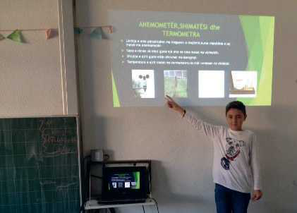

TEMATIKA 6: MEDIET2. Dita dhe Dielli prezantojnë projektin
Lexo dhe mëso
Sot shumë punë kryhen me kompjuter. Kompjuteri ka zëvendësuar shumë mjete pune të profesioneve të ndryshme. P.sh., në banka çdo e dhënë apo veprim bankar kryhet me kompjuter. Edhe puna e gazetarit, e inxhinierëve, e arkitektëve, e dizajnerëve etj., është e lidhur ngushtë me kompjuterin. Madje në shumë profesione është kthyer në një mjet pune parësor. Edhe në spitale të gjitha të dhënat e pacientëve hidhen në kompjuter.
Si për të rriturit, edhe për fëmijët njohja e kompjuterit dhe e programeve kompjuterike është kthyer në një domosdoshmëri. Ata mund ta përdorin kompjuterin për të kryer detyra dhe punime të ndryshme, të cilat i prezantojnë para moshatarëve të tyre. Prezantimet e tyre përmes kompjuterit janë të dobishme për nxënësit në shumë aspekte, si: intelektual, social, komunikues, bashkëpunues. Marrin njohuri të reja dhe fitojnë shkathtësi të reja, të cilat u shërbejnë për të ardhmen. Madje në shkollat tona mësimi i kompjuterit është futur edhe si lëndë shkollore, për shkak se kompjuteri dhe interneti përdoren sot në shumë fusha të jetës.
Mirëpo ne nuk duhet të harrojmë kurrë, që ekranet, kompjuteri dhe interneti duhet të shfrytëzohen në mënyrë të kujdesshme dhe të kufizuar, për qëllime produktive, si edukimi, arsimimi, marrja e informatave, për ide dhe për nevojat tona. Gjithmonë duhet të kemi parasysh dëmet fizike dhe psikologjike që sjell për ne përdorimi pa kufi i ekraneve dhe i internetit.
